PythonAutomation / ATE
How to use the operator console
This is the lab app you click. Pick your name, pick a product, run one test, then look at the numbers. Pictures below are real shots from this PC (2026-09-14).
Fast path: double-click START.bat -> browser opens -> pick you (not All) -> Apply campaign -> tick one test on Setup -> DEMO (SIM) if no instruments, or Open Session then START if USB is plugged in.
1. Install and launch
Two audiences. Pick one track. Both write into the same cloud folder.
| Who | How | Database |
|---|---|---|
| Run tests only | Unzip ATE_Console_Try_*.zip, double-click START.bat | Same OneDrive shortcut |
| This git clone | Double-click START.bat (repo root). python install.py if first time. | Same folder. Never a private copy inside the zip. |
Add OneDrive shortcut (not Sync)
The old method (Sync library, then type C:\Users\YOURNAME\#Test_Database by hand) is retired. If this page still shows that text, press Ctrl+F5.
| You are here | Launch |
|---|---|
| This git folder | Double-click START.bat at the repo root (same file the zip uses). Or run_ate_app.bat if venv already exists. |
| Unzipped console | Double-click START.bat at the top of the unzip (read TRY.txt). |
Open this URL (also in ate/config/sharepoint.url):
SharePoint -- Handover / Jianhong / #Test_Database
OneDrive - JumpWin Tech with a Status column (cloud / sync arrows / green tick). Right-click the folder -> Always keep on this device.START.bat (git clone and zip -- same file). It writes the local OneDrive path into ate/config/cloud_db.txt. One line. Not https. Browser: http://127.0.0.1:5174. Stale UI: Ctrl+F5.C:\Users\YOU\#Test_Database will not update other people.python -m ate.core.sync_repo -- not this folder.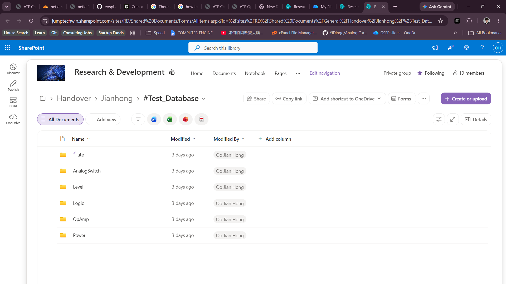
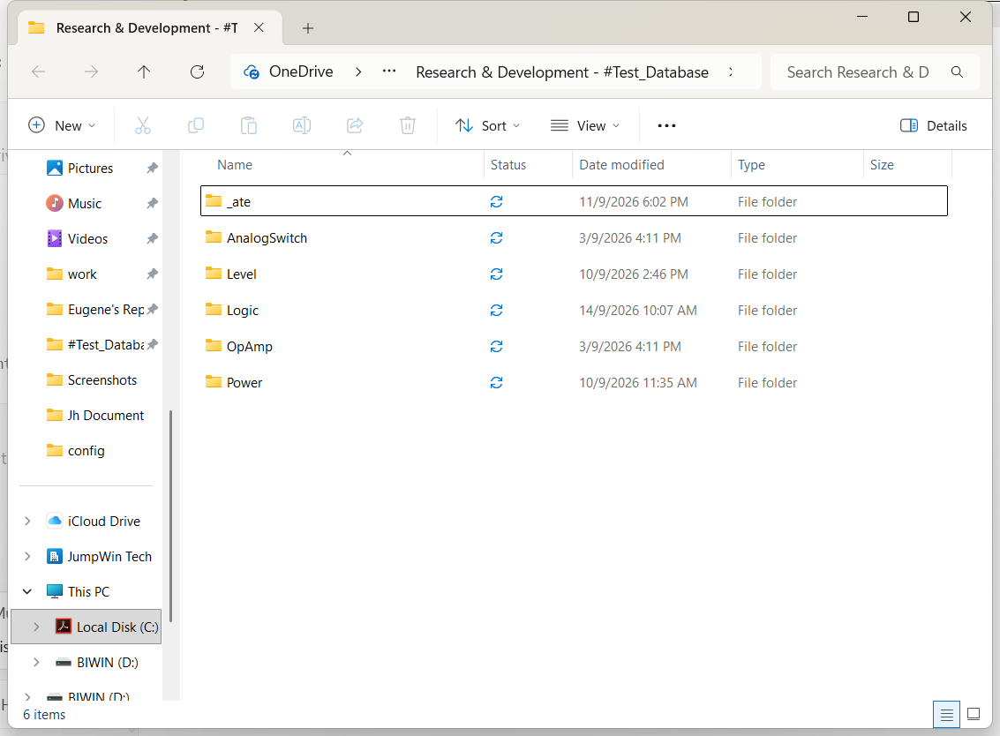
_ate AnalogSwitch Level Logic OpAmp Power, Status column syncing.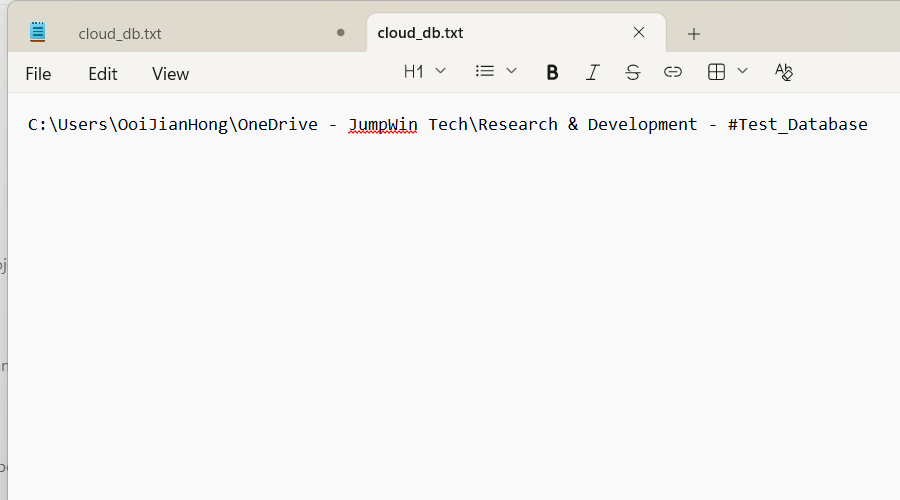
ate/config/cloud_db.txt one local OneDrive path. START.bat writes this. No bullet, no https.Ports (do not use others)
| Port | Service |
|---|---|
| 8766 | ATE worker JSON-RPC (ate.worker.server) |
| 5174 | Operator UI static server |
| 8765 | clipdrop -- leave it |
| 3000 / 3001 / 5000 | Founder reserved -- leave them |
2. Mental model (four axes, not five)
The console is organized around these words. Do not invent a Users table or Tags folder in the database path.
| Word | What it is |
|---|---|
| Family | Left rail: OpAmp, Logic, Analog SW, Level, Power (lim = analog switch alias) |
| Operator | Person folder under the campaign (Eugene, Ariff, ...). Top-right dropdown picks who you are. |
| Campaign | One Version tree: workbook + sessions + manifests under #Test_Database |
| Tracking row | One SKU line in ate/config/inventory.yaml (part we are testing now) |
#Test_Database/{Component}/{Part}/{Package}/{Operator}/{Version_N}/
Example (same part, two people):
Logic/RS1G08/SC70-5/Ariff/Version_1
Logic/RS1G08/SC70-5/ChangThong/Version_1
3. Boot splash
The dark card that says Operator console / Starting... is not a fifth tab. It covers the page until the worker on port 8766 answers. Then you should see Setup with OpAmp / Logic / Analog SW / Level / Power on the left.
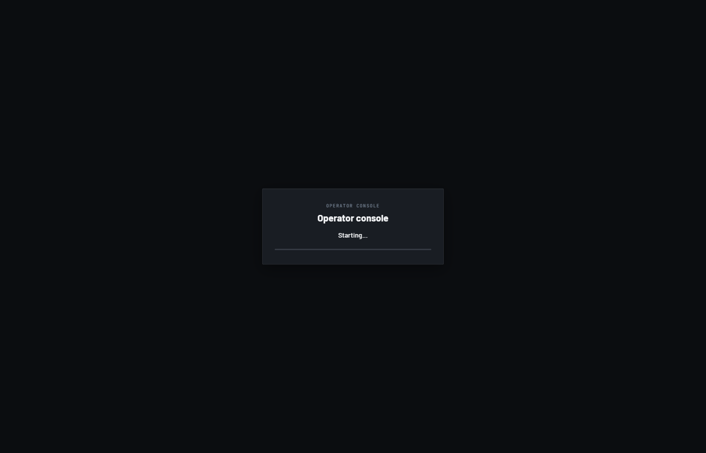
START.bat again (worker was down).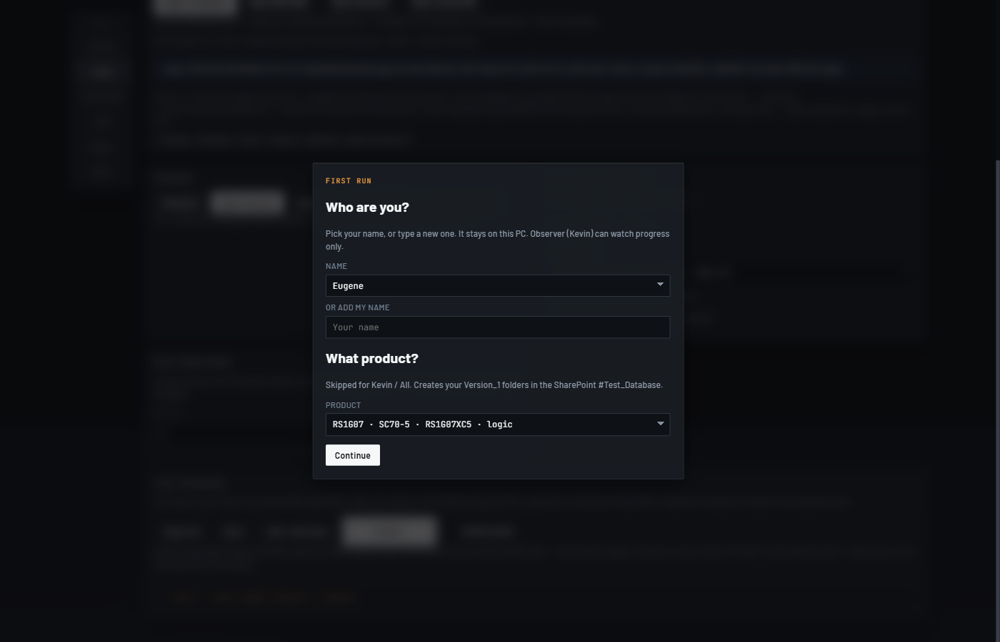
4. Header bar
| Element | ID / class | Purpose |
|---|---|---|
| Brand title | #brand-title | Changes with family (e.g. "OpAmp ATE", "Logic ATE"). |
| Breadcrumb | #db-breadcrumb | Live campaign path under #Test_Database. |
| Gate dock | #gate-dock | Pending Continue / Abort actions during START. Badge count on #gate-dock-btn. |
| Operator | #owner-select | Loads defaults from owners.yaml. Must be a real person to run. |
| Instrument tiles | #tiles MSO PSU AWG DMM | Green when discovered / session open. |
| Run pill | #header-bin | READY / BUSY / etc. |
| STOP | #btn-stop | Abort an in-flight run (danger). |
| Clock | #clock | Local time. |
5. Family rail (left)
.family-rail Selects which TestSpec package loads. Switching family reloads the test list and fixture catalog.
| Button | data-family | Typical parts |
|---|---|---|
| OpAmp | opamp | RS622, RS1G32, buffer / gain boards |
| Logic | logic | RS1G07, RS1G08, DC timing |
| Analog SW | switch | RS2323, RS2227 (lim alias) |
| Level | level | RS0204 dual-rail (logic suite) |
| Power | power | RS3213 stub-capable LDO |
6. Main navigation tabs
Single nav.tabs -- never add a second nav (UI contract).
| Tab | data-page | Section id | Role |
|---|---|---|---|
| Setup | setup | #page-setup | Campaign, session, DUT, test program, START / DEMO |
| Tests | detect | #page-detect | Path A catalog, version gaps, Path C wrap |
| Run | run | #page-run | Live progress, timeline, log during START |
| Results | results | #page-results | STS table, export, ledger, layout, lab board |
Tags are not a tab. They live under Setup > More.
7. Setup tab -- daily operator surface
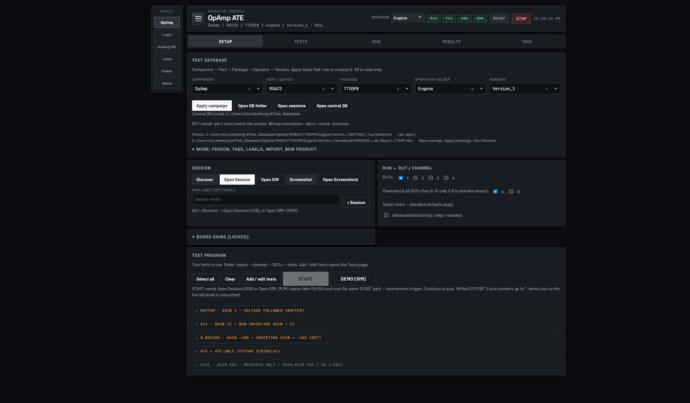
7.1 Test Database panel
Five combo fields (Component, Part, Package, Operator folder, Version). All use .combo with caret menu -- no datalist.
| Control | ID | Behavior |
|---|---|---|
| Apply campaign | #btn-apply-db | Loads or creates the Version tree. Required before START. |
| Open DB folder | #btn-open-db | Opens this campaign root in Explorer. |
| Open sessions | #btn-open-sessions | Opens sessions/ for this Version. |
| Open central DB | #btn-open-central | SharePoint-synced folder or https fallback. Does not mkdir a private DB. |
| Pin-1 hint | #pin1-hint | DUT orientation gate -- Abort if wrong, rotate, Continue. |
7.2 Session panel
| Button | ID | When to use |
|---|---|---|
| Discover | #btn-discover | USB scan via *IDN?. Empty result shows alert (not silent). |
| Open Session | #btn-open | Live VISA session. Required for USB START. PSU stays OFF until START. |
| Open SIM | #btn-open-sim | Fake PyVISA without USB. Same path as DEMO preflight. |
| Screenshot | #btn-shot | Capture scope screen to campaign screenshots folder. |
| + Session | #btn-new-session | Writes sessions/session_*.json only -- no VISA. |
Session hint shows VISA backend on live open, or sim_bus detail on SIM.
7.3 Run -- DUT / Channel
- DUT 1-4: Each checked DUT gets a board-change Continue gate on USB.
- Channels A/B: Order is all DUTs on CHA, then CHB (B-only if B alone checked).
- Advanced bench: VCC, freq, amp, repeats -- OpAmp sweeps only.
7.4 Run conditions (family YAML)
#panel-run-conditions -- corners from part yaml (vcc_sweep_list or controls:). Tests stay checkboxes in Test program.
7.5 Board gains (OpAmp)
#panel-gain-boards -- locked to physical fixture. Not a software dial.
7.6 Test program
| Control | Notes |
|---|---|
| Select all / Clear | USB: avoid Select-all on first live run. |
| Add / edit tests | Opens tests menu modal, jumps to Tests tab. |
| START | Disabled until Open Session or Open SIM. Programs PSU + AWG. |
| DEMO (SIM) | Preflight USB; if none, fake SCPI + auto Continue. |
Each test row shows AWG shape (SQU / SIN / DC / PULS / off) from list_tests.stimulus.
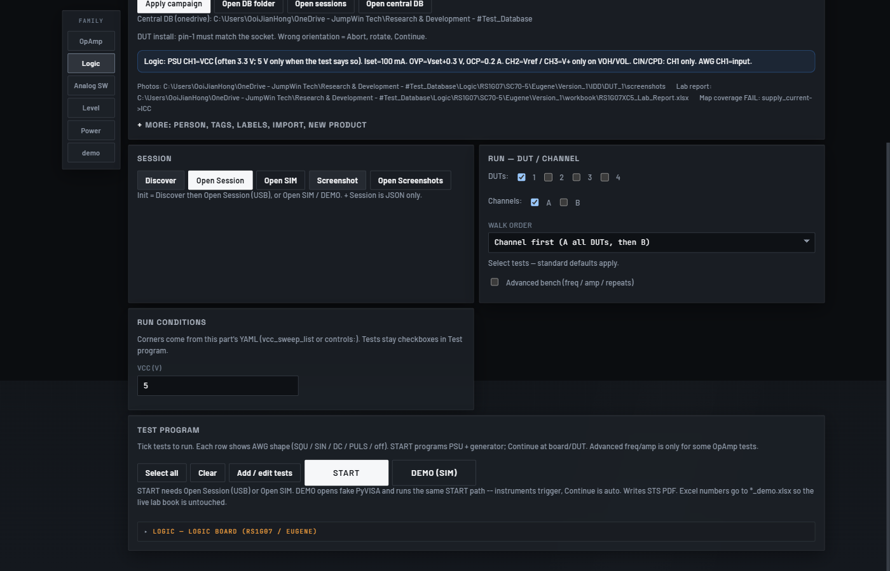
8. Setup -- More (collapsed)
details.setup-more -- engineer and campaign metadata. Not needed every run.
8.1 Person
- Save person -- writes
ate/config/owners.yamlfrom Operator name + current SKU. - Forget person -- drops yaml row only. Version folders stay.
8.2 Tags and labels
#db-tag-input-- Space/Enter adds free tags. Chips compact with+N more.- Kind board + Value saves fixture PCB id (e.g.
board:LOGIC-SC70-REV1). - Scope: this campaign / this class / all products.
- Clear all tags empties campaign tags. Saved to
TAGS.txt+ manifest.
8.3 Import xlsx
Copy an existing lab book into workbook/ for this campaign.
8.4 Import family (engineer)
GitHub URL or local folder into ate/tests/<family>/. Refuses overwrite of opamp/logic/level built-ins.
8.5 New product under test
Tracking sheet picker + RUN-IC class. Create folders + open builds Version_1. Do not scrape en.run-ic.com into the database.
8.6 PSU safety (always on)
OVP/OCP on each live channel: Vset+0.3 V and Iset+0.1 A. Not DP832 30 V / 3 A. Two OVP lamps on OpAmp is correct (CH1 and CH2 both 2.5 V). Full map: PSU channels.
9. Tests tab
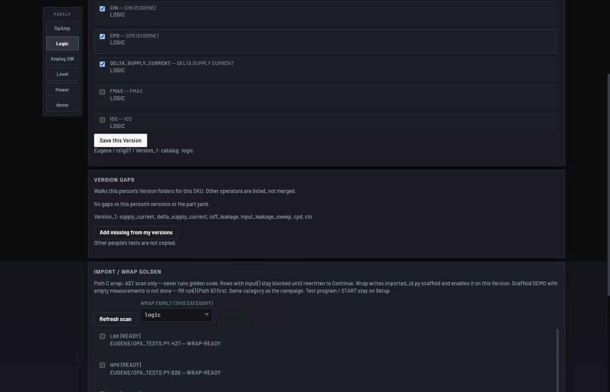
9.1 Customize tests (Path A)
#panel-campaign-tests -- tick registry ids that already exist in this category. Save this Version writes _manifest/test_catalog.yaml only.
9.2 Version gaps
Compares this person's Version folders for the SKU. Add missing from my versions copies enabled ids from your older Versions -- not from another operator.
9.3 Import / wrap golden (Path C)
AST scan of legacy test_* functions. Wrap writes imported_<id>.py scaffold. Rows with input() stay blocked. Scaffold is not done until you fill run() and measurements (Path B).
10. Run tab
Auto-switches during START. Read-only mirror of worker progress.
| Panel | ID | Content |
|---|---|---|
| Progress | #progress-bar, #progress-meta | Fraction complete, current step |
| Next banner | #next-banner | Human-readable next action |
| Step status | #step-status-bar | Per-step chips |
| Timeline | #timeline | Ordered steps with pass/fail |
| History | #history | Recent operator events |
| Log | #log | Raw worker text (also sessions/run_log.txt) |
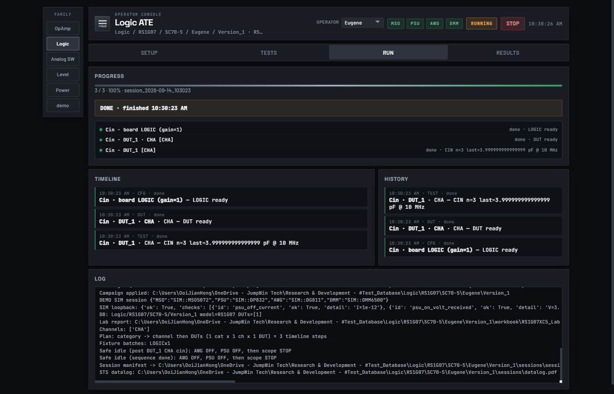
11. Results tab
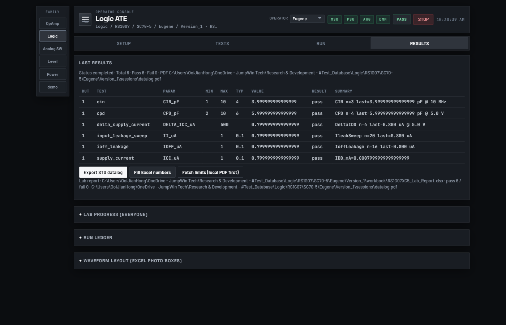
*_demo.xlsx so the live lab book is not overwritten.11.1 Last results
#results-table -- DUT, Test, Param, Min, Max, Typ, Value, Result, Summary.
#results-sts-status -- Status / Total / Pass / Fail after START or DEMO.
| Button | Action |
|---|---|
| Export STS datalog | Writes sessions/datalog.md, .html, .pdf |
| Fill Excel numbers | USB: live lab xlsx + photos. SIM: *_demo.xlsx only. |
| Fetch limits | Local Reference PDF first, then website if missing |
11.2 Lab progress board
#panel-progress-board -- everyone sees who ran what. Comments in #Test_Database/_ate. Kevin observer.
11.3 Run ledger
#run-ledger -- session JSON list. Chip x deletes one JSON, never the Version folder. Filters: this campaign / this SKU / all.
11.4 Waveform layout
Source of truth: _manifest/sheet_map.yaml tests.<key>.paste.photos. Edit photo box grid, compare latest vs previous shot, overlay difference.
12. Practice run -- DEMO (SIM)
Use this when the instruments are off, or you want a rehearsal. Same buttons as a real run. Numbers may be fake (typ / 0). The run must still finish.
*_demo.xlsx only.sessions folder (see Reports).13. Real instruments -- USB START
Do this when the scope, PSU, generator, and DMM are powered and USB-connected. Close Ultra Sigma first.
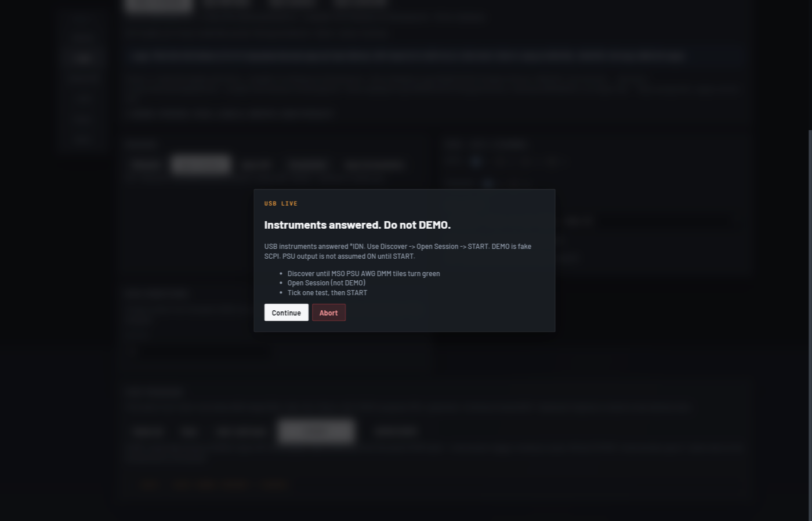
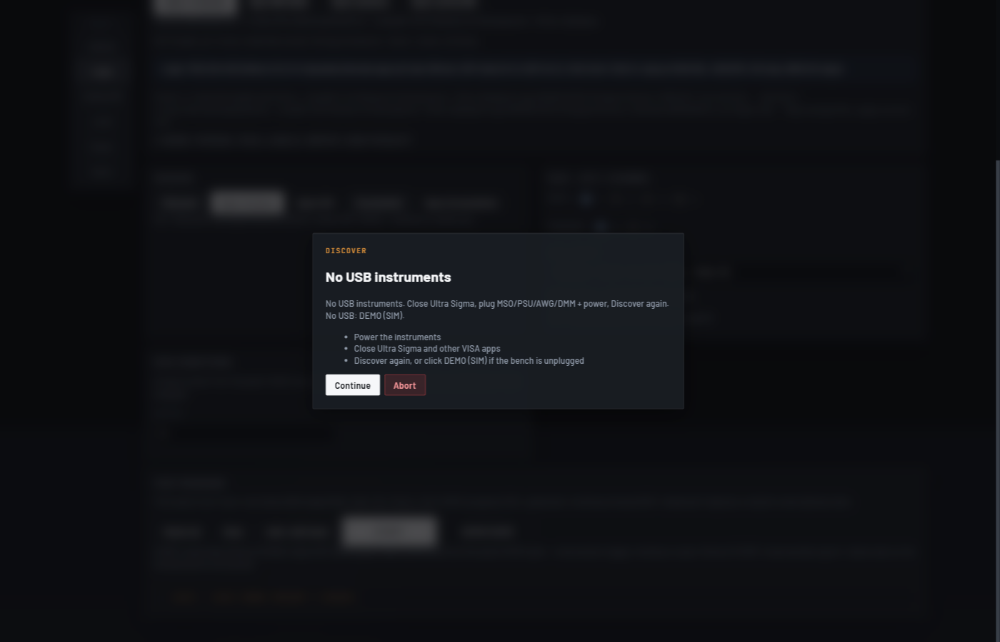
13b. PSU channels -- which is 5 V, how many amps
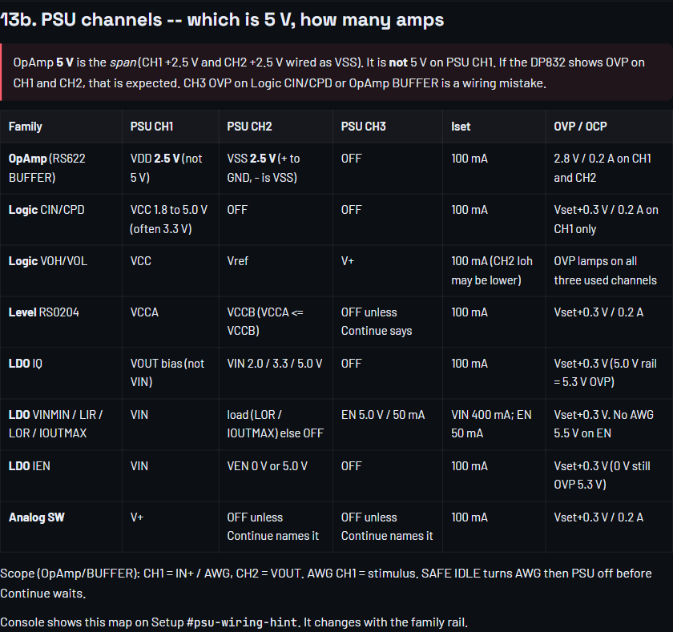
07-psu-wiring.png| Family | PSU CH1 | PSU CH2 | PSU CH3 | Iset | OVP / OCP |
|---|---|---|---|---|---|
| OpAmp (RS622 BUFFER) | VDD 2.5 V (not 5 V) | VSS 2.5 V (+ to GND, - is VSS) | OFF | 100 mA | 2.8 V / 0.2 A on CH1 and CH2 |
| Logic CIN/CPD | VCC 1.8 to 5.0 V (often 3.3 V) | OFF | OFF | 100 mA | Vset+0.3 V / 0.2 A on CH1 only |
| Logic VOH/VOL | VCC | Vref | V+ | 100 mA (CH2 Ioh may be lower) | OVP lamps on all three used channels |
| Level RS0204 | VCCA | VCCB (VCCA <= VCCB) | OFF unless Continue says | 100 mA | Vset+0.3 V / 0.2 A |
| LDO IQ | VOUT bias (not VIN) | VIN 2.0 / 3.3 / 5.0 V | OFF | 100 mA | Vset+0.3 V (5.0 V rail = 5.3 V OVP) |
| LDO VINMIN / LIR / LOR / IOUTMAX | VIN | load (LOR / IOUTMAX) else OFF | EN 5.0 V / 50 mA | VIN 400 mA; EN 50 mA | Vset+0.3 V. No AWG 5.5 V on EN |
| LDO IEN | VIN | VEN 0 V or 5.0 V | OFF | 100 mA | Vset+0.3 V (0 V still OVP 5.3 V) |
| Analog SW | V+ | OFF unless Continue names it | OFF unless Continue names it | 100 mA | Vset+0.3 V / 0.2 A |
Scope (OpAmp/BUFFER): CH1 = IN+ / AWG, CH2 = VOUT. AWG CH1 = stimulus. SAFE IDLE turns AWG then PSU off before Continue waits.
Console shows this map on Setup #psu-wiring-hint. It changes with the family rail.
14. Continue / Abort gates
#modal and #gate-dock -- operator must confirm wiring, DUT install, or probe moves.
- Continue -- proceed to next step.
- Abort -- safe stop; PSU/AWG idle per SAFE IDLE rules.
- Pin-1 wrong: Abort, rotate DUT, Continue.
- DEMO: gates auto-accept.
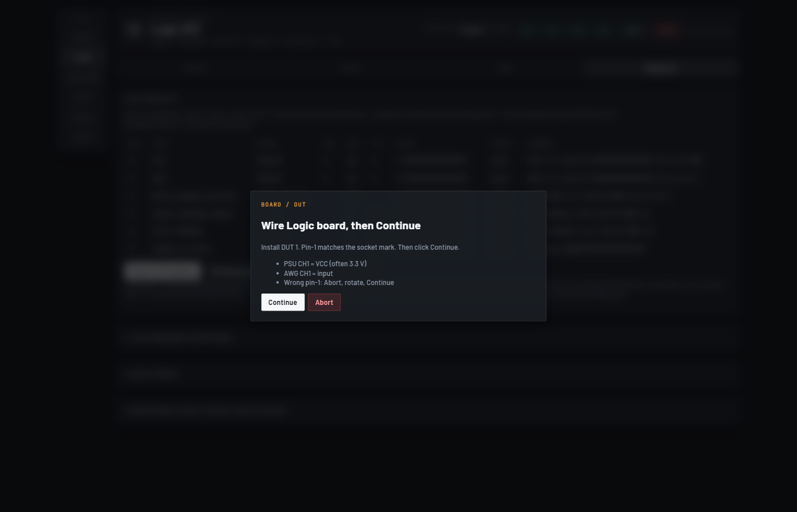
15. Reports and on-disk files
Under #Test_Database/.../Version_N/:
| Path | Purpose |
|---|---|
workbook/*.xlsx | Lab report (live). SIM uses *_demo.xlsx sidecar. |
sessions/datalog.pdf | STS export (also .md / .html) |
sessions/report.json | Living latest -- merge by test_id+dut(+channel) |
sessions/run_log.txt | Step dump for debug |
sessions/session_*.json | Per-run ledger entries |
{test}/DUT_n/records/*.json | Per-test history |
_manifest/test_catalog.yaml | Path A Version catalog (wins over part yaml) |
_manifest/sheet_map.yaml | Excel paste cells + photo boxes |
_manifest/tags.yaml | Campaign tags |
TAGS.txt | Human-readable tag list at campaign root |
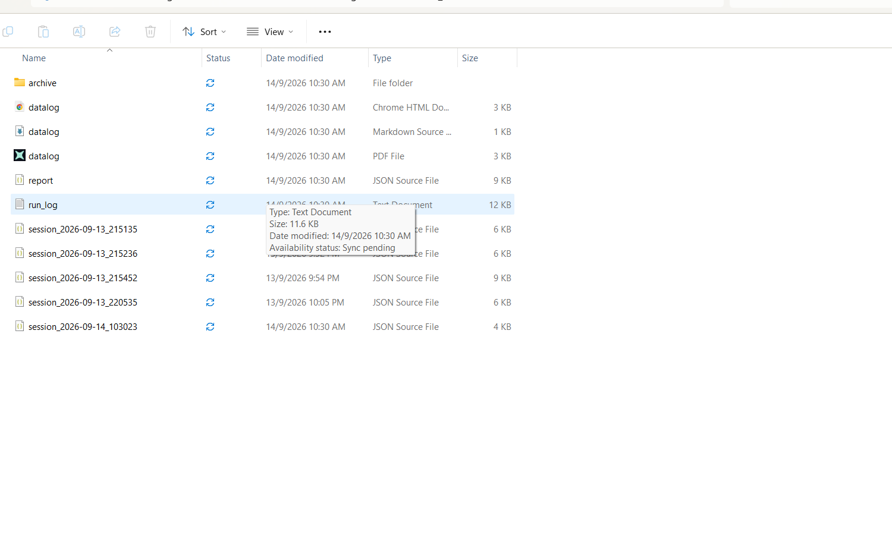
sessions folder. You want datalog.pdf (the STS sheet), report.json (latest numbers), and session_*.json (one file per run). OneDrive Status column should sync.datalog.pdf if it is missing.16. Add or customize a test (three paths)
Full detail: docs/VIBE_CODE.md. Check: python -m ate.core.check_add_test.
| Path | You do | Done when |
|---|---|---|
| A Customize | Tests tab tick + Save this Version | Setup shows id on this Version only |
| B Realize | New TestSpec + __init__.py + part yaml + limits | DEMO writes measurements |
| C Wrap then fill | Wrap golden -> imported_*.py then fill like B | No "scaffold -- fill body" in summary |
Path B shipped example: Eugene cin + cpd (Logic RS1G07)
check_add_test + check_demo_families (SIM runs CIN then CPD on RS1G07).| Test id | Label | Instruments | Measurement id | What it does |
|---|---|---|---|---|
cin | CIN (Eugene) | PSU, AWG, DMM | CIN_pF | 3.3 V, square 1 / 5 / 10 MHz, DMM current -> C = I/(V*f) |
cpd | CPD (Eugene) | PSU, AWG, DMM | CPD_pF | VCC corners 1.8 / 2.5 / 3.3 / 5.0 V, 10 MHz square, DMM current |
ate/tests/logic/eugene_cap.py # run_cin + run_cpd; register(TestSpec id=cin|cpd) ate/tests/logic/__init__.py # import eugene_cap ate/config/parts/rs1g07.yaml # enabled_tests includes cin, cpd ate/config/limits/rs1g07.yaml # specs CIN_pF, CPD_pF
Try it on the console: Family Logic, Part RS1G07, Operator Eugene, Apply campaign, tick cin or cpd on Setup, DEMO (SIM). Results STS shows CIN_pF / CPD_pF.
After worker-loaded edits: idle restart_ate_worker.bat. UI: Ctrl+F5.
runner.py to add a test. Do not call input() in TestSpec.run -- use pause_hook / Continue.17. Full application specs
17.1 Runtime stack
| Layer | Location | Notes |
|---|---|---|
| UI | ate/ui/web/ index.html, app.js, styles.css | Static; bump ?v= on change |
| Worker | ate/worker/server.py | JSON-RPC on 8766 |
| Runner | ate/core/runner.py | START sequence, gates, DUT order |
| Registry | ate/core/registry.py | TestSpec, load_family |
| Instruments | ate/instruments/ | Discover, session, SIM bus |
| Legacy (ingest only) | main.py, opa_tests.py | Not the live console runtime |
17.2 Instruments (typical bench)
| Tile | Typical model | Role |
|---|---|---|
| MSO | MSO5072 class | Scope capture, screenshots |
| PSU | DP832 | power_on_protected only. OpAmp CH1/CH2 = 2.5 V, not 5 V on CH1. See PSU channels. |
| AWG | DG8xx | Stimulus per test |
| DMM | DMM6500 (optional) | DC measurements when test requires |
17.3 Config files
| File | Purpose |
|---|---|
ate/config/cloud_db.txt | Local OneDrive path to #Test_Database (START writes this) |
ate/config/sharepoint.url | Browser link: Handover / Jianhong / #Test_Database |
ate/config/owners.yaml | Operators and defaults |
ate/config/inventory.yaml | Tracking sheet SKUs |
ate/config/parts/<key>.yaml | enabled_tests, conditions, fixture |
ate/config/limits/<key>.yaml | Min/max/typ specs |
ate/config/extra_families.yaml | Imported family slots |
17.4 UI contract rules
- One
nav.tabs, four pages: setup, detect, run, results. - Fonts: Barlow, JetBrains Mono, Space Grotesk only (no fourth family).
- Combo dropdowns for Setup fields -- not datalist.
- Tags on Setup More -- not a Tags tab.
- Run ledger and lab board under Results
details-- not new tabs. - Boot splash until worker + sync_repo ready.
17.5 START gate invariants
- START disabled until Open Session or Open SIM.
- Apply campaign before meaningful RPC.
- Category-first order: board/category -> all DUTs on channel -> next channel.
- PSU output not assumed ON until test writes it.
- DEMO with USB plugged: refused (live path required).
17.6 Demo family acts (SIM rehearsal)
| Act | Family | Part | Tick one test |
|---|---|---|---|
| C | OpAmp | RS622 TTSOP8 | slew |
| D | Analog SW | RS2323 MSOP | iplus |
| E | Level | RS0204 TSSOP14 | vih |
| F | Power | RS3213 SOT23-5 | iq |
18. Troubleshooting
| Problem | Fix |
|---|---|
| OneDrive: already syncing a shortcut | Do not click Sync. Use Add shortcut to OneDrive. If asked to Replace, click Replace. |
| START writes to a folder others never see | You are on a drag-copy. Switch cloud_db.txt to the OneDrive shortcut path (Figure C). |
| Worker offline | run_ate_app.bat or restart_ate_worker.bat (idle only) |
| UI looks old | Ctrl+F5; check app.js?v= |
| Discover empty | USB, power, close Ultra Sigma, or use DEMO |
| START disabled | Open Session or Open SIM first |
| DEMO says use Open Session | USB answered *IDN -- correct, go live |
| Excel unchanged on DEMO | Look for *_demo.xlsx |
| Wrong part on run | Apply campaign again |
venv not found | python install.py from repo root |
19. Proof checks (run what you touched)
python -m ate.core.check_cloud_db python -m ate.core.check_ui_contract python -m ate.core.check_operator_tree python -m ate.core.check_sim_run python -m ate.core.check_visa python -m ate.core.check_demo_families python -m ate.core.check_add_test python -m ate.core.check_family_load python -m ate.core.check_campaign_outline python -m ate.core.check_session_values python -m ate.core.check_specs_datalog
A green check that never could fail is not a check. check_visa with only SKIP ASRL does not prove USB gear is plugged in.